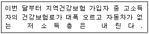
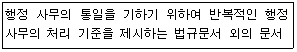
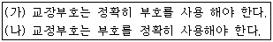
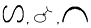
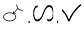
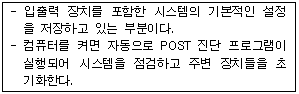

워드프로세서-2급(폐지) (2010-09-12 기출문제)
1과목: 워드프로세서 용어 및 기능
1. 다음 중 소수점을 중심으로 정수와 소수를 정렬하기 위해 사용하는 기능은?
- 격자(Grid)
- 데시멀 탭(Decimal Tab)
- 라인피드(Line Feed)
- 레이아웃(Layout)
(정답률: 80%)

2. 다음 중 마우스의 끌어다 놓기(Drag & Drop)를 이용하여 처리하기에 가장 적합한 것은?
- 단어의 치환(Replace)
- 그림이나 표의 위치 변경
- 맞춤법 검사
- 메일 머지(Mail Merge)
(정답률: 86%)
3. 다음 중 KS X 10⑤-1 유니코드의 설명으로 옳지 않은 것은?
- 국제 표준 코드이다.
- 모든 문자를 2바이트로 표현한다.
- 정보처리와 정보 교환에 사용한다.
- 다른 한글코드에 비해 기억공간을 가장 적게 차지한다.
(정답률: 72%)
4. 다음 보기의 내용에 적용되고 있는 정렬 방식은 무엇인가?

- 양쪽 배분정렬(균등 분할 맞춤)
- 오른쪽 정렬(오른쪽 맞춤)
- 왼쪽 정렬(왼쪽 맞춤)
- 가운데 정렬(가운데 맞춤)
(정답률: 92%)
5. 다음 설명이 의미하는 지시문서의 종류로 적합한 것은?

- 훈령
- 지시
- 예규
- 일일명령
(정답률: 69%)
6. 다음 중 글자모양 지정에 해당하지 않은 것은?
- 글자색
- 글꼴
- 글자 크기
- 들여쓰기
(정답률: 93%)
7. 다음 중 화면 표시장치에 대한 설명으로 옳지 않은 것은?
- CRT는 부피가 커서 공간을 많이 차지한다.
- LCD는 보는 각도에 따라 선명도가 다를 수 있다.
- 대표적인 표시장치로는 CRT, LCD, PDP 방식이 있다.
- PDP는 LCD에 비해 전력소모가 적어 그래픽 영상 작업용이나 벽걸이 TV로 사용된다.
(정답률: 79%)
8. 다음 중 문서작성의 일반사항과 거리가 먼 것은?
- 문서에 쓰이는 용지의 색깔은 특별한 사유가 있는 경우를 제외하고는 흰색으로 한다.
- 문서에 쓰이는 글자의 색깔은 검은색 또는 푸른색으로 한다. 다만, 도표의 작성이나 수정 또는 주의 환기 등 특별한 표시가 필요한 때에는 다른 색깔로 할 수 있다.
- 시행문의 내용을 삭제 또는 수정한 때에는 문서의 여백에 삭제 또는 수정한 자수를 표시하고 서명하여야 한다.
- 문서 및 유가증권에 금액을 표시하는 때에는 아라비아숫자로 쓰되, 숫자 다음에 괄호를 하고 한글로 기재하여야 한다.
(정답률: 64%)
9. 다음 중 글자 모양에 대한 설명으로 옳지 않은 것은?
- 아웃라인 글꼴에는 비트맵, 트루타입, 벡터, 포스트스크립트, 오픈 타입 등이 있다.
- 한 단어에 여러 개의 글자 속성을 부여할 수 있다.
- 자간이란 글자와 글자 사이의 간격을 말한다.
- 장평은 글자의 가로 폭을 늘리거나 줄여서 글자에 변화를 주는 것이다.
(정답률: 67%)
10. 다음 워드프로세서의 용어에 대한 설명으로 옳지 않은 것은?
- 문자 피치(Character Pitch) : 인쇄 시 문자와 문자 사이의 간격을 표현하는 단위로 피치가 클수록 문자 사이의 간격이 넓어진다.
- 디폴트(Default) : 문서 편집과 관련된 여러 가지 서식이나 메뉴 등 설정 항목의 기본 값을 의미한다.
- 래그드(Ragged) : 문단의 각 행 중에서 한 쪽 끝이 정렬이 안 된 상태를 말한다.
- 옵션(Option) : 명령이나 기능을 수행하는 데 필요한 추가적인 요소나 선택 항목을 말한다.
(정답률: 63%)
11. 다음 중 기억장치의 접근속도가 빠른 것에서 느린 순서대로 바르게 나열한 것은?
- 캐시메모리→레지스터→주기억장치→보조기억장치
- 캐시메모리→레지스터→보조기억장치→주기억장치
- 레지스터→캐시메모리→보조기억장치→주기억장치
- 레지스터→캐시메모리→주기억장치→보조기억장치
(정답률: 77%)
12. 다음 중 인쇄용지의 크기를 큰 순서에서 작은 순서로 바르게 나열한 것은?
- B4＞A4＞B3＞A3
- A3＞B3＞A4＞B4
- B3＞A3＞B4＞A4
- A4＞B4＞A3＞B3
(정답률: 79%)
13. 다음 중 매크로(Macro)에 대한 설명으로 가장 적합한 것은?
- 복잡한 수식이나 화학식을 입력할 때 사용하는 기능
- 문서 내용 중 특정 문자열을 찾아 다른 문자열로 바꾸는 기능
- 글자모양, 문단모양, 등 표준서식을 만들어 쉽게 문서의 서식을 적용하여 바꾸는 기능
- 일련의 작업순서를 특정키에 기억시켜 필요할 때 한 번에 재생해 내는 기능
(정답률: 69%)
14. 다음 중 본문에서 인용한 자료의 출처나 보충 설명 등을 문서의 맨 마지막 페이지에 모아서 표시하는 기능을 무엇이라 하는가?
- 꼬리말
- 미주
- 각주
- 색인
(정답률: 75%)
15. 다음 중 확장자가 BAK인 백업 파일에 대한 설명으로 옳은 것은?
- 워드프로세서 프로그램을 작성하는 언어를 의미한다.
- 워드프로세서와 다른 프로그램을 연결할 때 반드시 사용되는 파일이다.
- 워드프로세서의 특수 기능인 수식을 편집할 때 사용되는 파일이다.
- 워드프로세서를 사용할 때 원본 파일이 삭제되거나 파괴되었을 때 복구를 위해 사용되는 파일이다.
(정답률: 83%)
16. 다음 중 문서의 검토 및 협조에 대한 설명으로 옳지 않은 것은?
- 기안문은 결재권자의 결재를 받기 전에 보조기관 또는 보좌기관의 검토를 받아야 한다.
- 문서의 내용이 행정기관내의 다른 보조기관 또는 보좌기관이나 다른 행정기관의 업무와 관련이 있을 때에는 그 기관의 협조를 받아야 한다.
- 행정기관의 장은 결재권자의 결재에 이르기까지 검토자의 수가 3인을 넘지 아니하도록 노력하여야 한다.
- 기안문을 검토 또는 협조함에 있어서 그 내용과 다른 의견이 있을 때에는 당해문서 또는 별지에 그 의견을 표시하여야 한다.
(정답률: 77%)
17. 다음 중 音(음)을 모르는 한자를 입력하기 위한 방법으로 가장 적당한 것은?
- 한 글자 씩 입력한 후 [한자]키를 눌러 변환한다.
- 부수와 획수를 입력한 후 해당 한자를 선택하여 변환한다.
- 한 단어를 입력한 후 [한자]키를 눌러 변환한다.
- 범위를 지정한 후 [한자]키를 눌러 차례대로 변환한다.
(정답률: 75%)
18. 다음 중 화면 캡처(Screen Capture)기능에 대한 설명으로 옳지 않은 것은?
- 현재 활성화된 창 화면을 캡처할 수 있다.
- 모니터에 나타난 화면 전체를 캡처할 수 있다.
- 화면 그대로를 그림의 형태로 클립보드에 저장하거나 파일의 형태로 보조기억장치에 저장하는 기능이다.
- 한 번 화면을 캡처한 후 저장하지 않은 상태에서 컴퓨터를 재부팅한 후 워드프로세서 문서에 붙여넣기 할 수 있다.
(정답률: 76%)
19. 다음 중 교정부호 사용시 유의할 점에 대하여 설명한 것으로 옳지 않은 것은?
- 교정부호는 정해진 부호를 사용해서 교정한다.
- 교정 부호를 표시하는 색은 인쇄된 글자의 색상과 다르면서 눈에 잘 띄는 색으로 한다.
- 한 번 교정된 부분은 다시 교정할 수 없다.
- 교정부호가 서로 겹칠 경우에는 겹치는 각도를 조절하여 알아볼 수 있도록 한다.
(정답률: 85%)
20. 다음은 (가)의 문장을 교정부호를 사용하여 (나)의 문장형태로 수정한 것이다. 수정할 때 사용된 교정부호의 순서가 올바르게 나열된 것은?



(정답률: 77%)
2과목: PC 운영 체제
21. 다음 중 한글 Windows XP의 바탕 화면에 있는 바로가기 아이콘의 등록정보 창에서 변경할 수 있는 항목으로 옳지 않은 것은?
- 대상 파일의 이름과 위치
- 연결 프로그램의 지정
- 만든 날짜와 파일의 크기
- 해당 아이콘의 그림
(정답률: 61%)
22. 다음 중 한글 Windows XP[보안 센터] 창에서 Windows 보안 설정에 관한 항목으로 옳지 않은 것은?
- 팝업 차단
- 방화벽
- 바이러스 백신
- 자동 업데이트
(정답률: 65%)
23. 다음 중 한글 Windows XP의 [내게 필요한 옵션] 창에서 입력 실수를 방지하기 위해 [Caps Lock]과 같은 키를 누를 때 신호음을 들을 수 있도록 설정하는 항목으로 옳은 것은?
- 고정키
- 마우스키
- 필터키
- 토글키
(정답률: 71%)
24. 다음 중 한글 Windows XP에서 [도움말 및 지원 센터]에 대한 설명으로 옳지 않은 것은?
- 도움말의 하이퍼텍스트 기능을 제공한다.
- 사용자가 Windows 도움말을 수정할 수 있다.
- 도움말 내용을 프린터로 출력할 수 있다.
- 원격 지원을 이용하여 도움을 요청할 수 있다.
(정답률: 73%)
25. 다음 중 한글 Windows XP의 컴퓨터의 네트워크 통신을 위하여 사용하는 약속과 규칙을 무엇이라 하는가?
- 펌웨어
- 셰어웨어
- 클라이언트
- 프로토콜
(정답률: 81%)
26. 다음 중 한글 Windows XP에서 사용되는 [Windows 탐색기]의 주 메뉴 [보기]를 사용하여 설정할 수 있는 아이콘 정렬 순서로 옳지 않은 것은?
- 실행
- 크기
- 이름
- 수정한 날짜
(정답률: 76%)
27. 다음 중 한글 Windows XP의 바탕화면을 마우스로 클릭하고 [Alt]+[F4] 키를 눌렀을 때 결과로 옳은 것은?
- 프로그램 전환을 위한 창이 표시된다.
- 실행 중인 모든 프로그램이 종료된다.
- [시스템 종료] 창이 표시된다.
- [시작] 메뉴가 표시된다.
(정답률: 70%)
28. 다음 중 한글 Windows XP에서 실행중인 프로그램을 종료하지 않고 다른 사용자로 로그온 할 수 있게 하는 기능으로 옳은 것은?
- 작업영역 사용자 지정
- 사용자 프로필 전환
- 대기모드로 전환
- 빠른 사용자 전환
(정답률: 64%)
29. 다음 중 한글 Windows XP에서 [탐색기] 창의 하단에 있는 상태 표시줄에서 확인할 수 있는 정보로 옳지 않는 것은?
- 드라이브나 폴더의 이름
- 폴더에 있는 하위 폴더와 파일의 수
- 폴더에 있는 파일의 총 크기
- 사용할 수 있는 디스크 공간
(정답률: 46%)
30. 다음 중 한글 Windows XP에서 [시스템 등록 정보] 창에 있는 [장치 관리자]를 선택하여 수행할 수 있는 작업으로 옳은 것은?
- 응용프로그램의 추가
- 하드웨어의 제거
- 시동디스크의 작성
- Windows 구성 요소의 설치
(정답률: 47%)
31. 다음 중 한글 Windows XP에서 폴더나 파일에 대한 설명으로 옳지 않은 것은?
- 폴더 아이콘은 다양한 모양으로 지정할 수 있다.
- 폴더나 파일은 읽기 전용으로 지정할 수 있다.
- 폴더는 파일만으로 구성된다.
- 파일은 자료가 저장되는 기본 단위이다.
(정답률: 65%)
32. 다음 중 한글 Windows XP의 [보조프로그램]에 있는 [메모장] 프로그램에서 할 수 있는 기능으로 옳지 않은 것은?
- 문서 전체의 글꼴 스타일과 크기 바꾸기
- 머리글 또는 바닥글 만들기
- 특정 문자나 단어를 찾아서 바꾸기
- 표 만들기
(정답률: 75%)
33. 다음 중 한글 Windows XP에서 설치된 프린터의 인쇄 관리자(대기열) 창에서 수행할 수 있는 작업으로 옳지 않은 것은?
- 프린터의 작동을 일시 중지할 수 있다.
- 대기 중인 모든 문서의 인쇄를 취소할 수 있다.
- 대기 중인 문서의 인쇄 우선순위를 변경할 수 있다.
- 대기 중인 문서의 미리 보기를 할 수 있다.
(정답률: 55%)
34. 다음 중 한글 Windows XP의 [시스템 도구]에 있는 [디스크 조각 모음]에 관한 설명으로 옳은 것은?
- 디스크의 사용 공간을 줄인다.
- 파일의 접근 속도를 높여준다
- 디스크의 오류를 검사한다.
- 디스크나 폴더를 압축하여 사용 공간을 늘린다.
(정답률: 54%)
35. 다음 중 한글 Windows XP의 [휴지통]에서 복원이 가능한 경우로 옳은 것은?
- USB 메모리에서 삭제된 항목
- [Shift]+[Delete]를 눌러 삭제한 항목
- 파일을 삭제한 지 한 달 이상이 지났으나 휴지통에 남아 있는 경우
- 휴지통의 크기를 0%로 설정한 경우
(정답률: 80%)
36. 다음 중 한글 Windows XP에서 사용자의 ID가 ‘wp'일 경우에 바탕 화면에 있는 파일이나 폴더 아이콘들을 실제로 포함하는 폴더로 옳은 것은?
- C:\wp\바탕화면
- C:\Documents and Settings\wp\바탕화면
- C:\Windows\wp\바탕화면
- C:\Program Files\wp\바탕화면
(정답률: 60%)
37. 다음 중 한글 Windows XP의 [프로그램 추가/제거] 창에서 ‘Windows Media Player'나 ’Internet Explorer'등의 프로그램을 새로 설치하기 위해 선택하는 항목으로 옳은 것은?
- 프로그램 변경/제거
- 새 프로그램 추가
- Windows 구성요소 추가/제거
- 기본 프로그램 설정
(정답률: 65%)
38. 다음 중 한글 Windows XP에서 네트워크 구성 요소 중에서 파일 및 프린터 공유와 같은 기능을 제공하는 것으로 옳은 것은?
- 클라이언트
- 서비스
- 프로토콜
- 어댑터
(정답률: 56%)
39. 다음 중 한글 Windows XP의 [그림판] 프로그램에서 마우스의 오른쪽 버튼을 누른 상태로 연필과 붓을 사용하여 그림을 그린 경우에 대한 설명으로 옳은 것은?
- 연필과 붓 모두가 전경색으로 그려진다.
- 연필은 전경색, 붓은 배경색으로 그려진다.
- 연필은 배경색, 붓은 전경색으로 그려진다.
- 연필과 붓 모두가 배경색으로 그려진다.
(정답률: 63%)
40. 다음 중 한글 Windows XP의 [검색 결과] 창에서 검색이 가능한 내용으로 옳지 않은 것은?
- 문서(워드프로세서, 스프레드시트 등)
- 컴퓨터 또는 사람
- 도움말 및 지원 센터에 있는 정보
- 발송한 이메일의 내용
(정답률: 65%)
3과목: PC 기본 상식
41. 다음 중 운영체제에 관한 설명으로 옳지 않은 것은?
- 시스템 소프트웨어이다.
- 플랫폼은 컴퓨터 하드웨어와 운영체제 소프트웨어가 결합된 것을 말한다.
- 응용소프트웨어와 하드웨어 사이에서 중재자 역할을 한다.
- 부팅은 운영체제 전체를 제어하는 프로그램이다.
(정답률: 53%)
42. 다음 보기에서 설명한 내용에 해당하는 것은 어느 것인가?

- MIPS
- BIOS
- MAKE
- CDMA
(정답률: 73%)
43. 다음 중 GIF 파일 형식에 대한 설명으로 옳지 않은 것은?
- GIF89a 버전에서는 인터레이싱, 투명성, 애니메이션 등의 기능이 추가되었다.
- 24Bit 트루컬러로 표현할 수 있다.
- 웹문서에서 사용될 수 있는 형식이다.
- 비트맵 방식이다.
(정답률: 58%)
44. 다음 중 컴퓨터 범죄의 예방 방법으로 적절하지 않은 것은?
- 패스워드는 다른 사람에게 노출되지 않게 관리한다.
- 중요 자료는 만일을 위해 백업해 둔다.
- 인터넷 보안을 위해 방화벽을 설치하여 운영한다.
- 인터넷 상에서 다운로드 받은 프로그램을 일단 설치한 후 바이러스 검사를 한다.
(정답률: 78%)
45. 다음 중 근거리에서 데이터 통신을 무선으로 가능하게 해 주는 표준 기술을 무엇인가??
- Bluetooth
- GPS
- GIS
- DMB
(정답률: 65%)
46. 다음 중 여러 대의 하드디스크를 모아 하나의 디스크처럼 작동하게 하여 대용량의 파일을 저장할 수 있고, 하나의 파일을 여러 디스크에 동시에 저장할 수 있도록 하여 신뢰성을 높여줄 수 있는 저장장치와 관계가 가장 깊은 것은?
- RAID
- DVD
- ZIP-Drive
- Juke Box
(정답률: 69%)
47. 중앙처리장치가 데이터를 처리하는 동안 사용할 값이나 중간 결과를 일시적으로 저장해 두는 중앙처리장치내의 고속 기억장치를 무엇이라 하는가?
- 레지스터
- 마이크로프로세서
- 인터럽트
- 캐쉬
(정답률: 68%)
48. 다음 중 백신 프로그램의 기능에 해당하지 않는 것은?
- 바이러스 발견(Virus Hunter)
- 파일 백업(File Backup)
- 피해 복구(Damage Control)
- 바이러스 예방(Virus Prevention)
(정답률: 62%)
49. 다음 중 멀티미디어 그래픽 기법과 가장 관련이 적은 용어는?
- 인터프리터
- 모핑
- 클레이메이션
- 리터칭
(정답률: 58%)
50. 컴퓨터가 발전해오는 과정에서 나타난 현상으로 가장 올바르지 않은 것은?
- 컴퓨터의 기억장치의 용량은 대형화되어 왔다.
- 컴퓨터 소프트웨어 기술은 하드웨어 기술보다 빠르게 발전해 왔다.
- 컴퓨터 기억장치의 크기는 소형화되어 왔다.
- 컴퓨터의 중앙처리장치의 속도는 더 빨라졌다.
(정답률: 58%)
51. 다음 중 프로그램을 작성하는 과정에서 오류가 발생하였을 경우 이러한 오류를 제거하는 작업을 무엇이라고 하는가?
- 코딩
- 디버깅
- 테스팅
- 링킹
(정답률: 78%)
52. 다음 중 실시간 처리 시스템과 거리가 먼 것은?
- 급여 처리 시스템
- 온라인 예금 시스템
- 공장 제어 시스템
- 기차표 예매 시스템
(정답률: 63%)
53. 다음 중 정보통신 시스템의 구성요소가 아닌 것은?
- 컴퓨터
- 통신제어장치
- 구내 사설교환기
- 데이터 전송회선
(정답률: 73%)
54. 다음 중 원격 컴퓨터로부터 파일(File)을 복사하는 과정을 의미하는 것은?
- 업로딩(Uploading)
- 인로딩(Inloading)
- 다운로딩(Downloading)
- 탑로딩(Toploading)
(정답률: 71%)
55. 다음 중 컴퓨터 시스템이 동작하기 위한 네 가지 중요 요소에 해당하지 않는 것은?
- 입력장치
- 중앙처리장치
- 분산처리장치
- 기억장치
(정답률: 71%)
56. 다음 중 정보화 사회의 부작용에 대한 설명으로 거리가 먼 것은?
- 개인정보 유출 등 인간의 사생활 침해가 증가된다.
- 기술의 인간 지배와 비인간화 현상이 발생한다.
- 빠른 속도에 의해 시간과 공간의 제약이 없어진다.
- 정보 이용의 격차로 정보 소외 현상이 발생한다.
(정답률: 67%)
57. 다음 중 멀티미디어 기술이 발전하게 된 배경과 가장 거리가 먼 것은?
- 대용량 데이터를 저장하는 매체 기술의 발전
- 데이터 압축 기술의 발전
- 아날로그(analog) 기술의 발전
- 데이터 통신 기술의 발전
(정답률: 76%)
58. 다음 중 그래픽 기법의 설명으로 옳은 것은?
- 메조틴트(Mezzotint) : 이미지에 많은 점을 찍은 듯한 효과를 나타내는 방법
- 디더링(Dithering) : 이미지의 대략적인 모습을 먼저 보여준 다음 점차적으로 자세한 모습을 보여주는 기법
- 렌더링(Rendering) : 2개의 이미지를 부드럽게 연결하여 변환, 통합하는 기법
- 필터링(Filtering) : 제한된 색상을 조합하여 다양한 색이나 새로운 색을 만드는 작업
(정답률: 49%)
59. 다음 중 가장 강력한 성능의 컴퓨터로 막대한 양의 데이터를 처리하도록 설계되어 있으며, 인간 유전자 분석, 일기 예보, 핵융합 등과 같은 복잡한 과정을 처리하는데 사용하는 컴퓨터를 무엇이라고 하는가?
- 마이크로컴퓨터(Micro computer)
- 워크스테이션(Workstation)
- 랩탑 컴퓨터(Laptop computer)
- 슈퍼컴퓨터(Super computer)
(정답률: 80%)
60. 다음 중 자주 사용하는 사이트의 자료를 저장한 후, 사용자가 다시 그 자료에 접근하면 네트워크를 통해서 다시 읽어 오지 않고 미리 저장되어 있던 자료를 활용하여 빠르게 보여주는 기능을 나타내는 용어는 어느 것인가?
- 쿠키(Cookie)
- 캐싱(Caching)
- 스트리밍(Streaming)
- 로밍(Roaming)
(정답률: 53%)
123.45
678.90
따라서, 데시멀 탭은 숫자를 정렬하는 데 유용한 기능입니다.